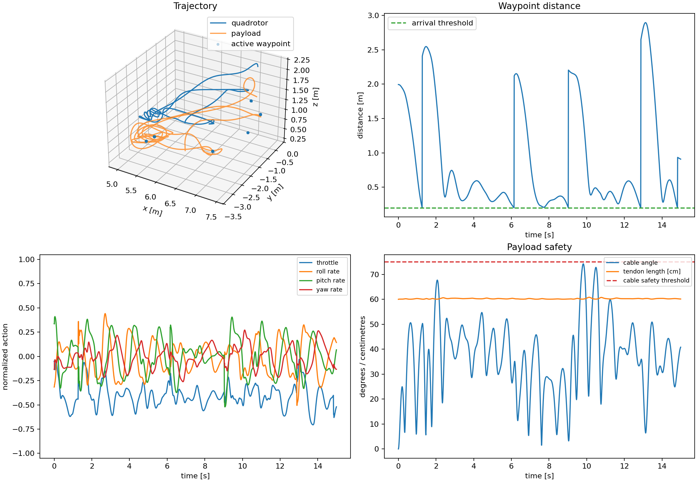

Simulation model
A 1.05 kg quadrotor and 0.1128 kg payload are separate bodies connected by a spatial tendon with a 0.60 m length limit.
Robot learning · Aerial robotics · Simulation
A FLARE-derived payload-control implementation built in MJLab for the lab’s larger quadrotor, with custom cable constraints, low-level controller testing, and experimentally retuned rewards.
The problem
A suspended payload introduces coupled motion: moving the quadrotor can set the load swinging, and reaching a waypoint with the vehicle does not mean the payload has reached it. The current priority is reaching payload targets. The policy learns to act within the coupled cable-swing dynamics; minimizing swing is a secondary objective.
The repository includes both quadrotor-waypoint and payload-targeting tasks. In the latter, a waypoint is reached when the payload enters a 0.2 m target sphere.
My contribution
I built the payload-control implementation in MJLab using FLARE as the research foundation. My work included configuring MuJoCo’s spatial tendon constraints, testing the low-level PID controller, and retuning the reward weights for the lab’s different quadrotor and payload. Using the lab’s existing MuJoCo payload pipeline makes it easier to benchmark learned policies against classical controllers in the same simulation environment.
The cable has a configured length limit of 0.60 m. When taut, its length constraint generates tension that couples the load to the aircraft. When slack, the cable exerts no tensile force: the payload follows free-fall motion under gravity until the cable becomes taut again, assuming no other contact forces. The cable can pull but cannot push.
Engineering iteration
I tested the low-level controller before training the policy. Initial training with the paper’s reward weights did not produce the intended behavior on our different vehicle and payload, so I retuned the reward balance through repeated experiments.
Target progress had to be balanced against command smoothness, body rotation, and cable-angle penalties. The table records the behavioral tendencies I observed during tuning; the weights interact, so these are not independent guarantees.
| Weight | Increasing | Decreasing |
|---|---|---|
| target | More aggressive waypoint tracking | Slower, less aggressive tracking |
| smooth magnitude | Smoother action commands | Faster, more abrupt actions |
| yaw | Stronger preference for yaw near zero | More yaw rotation |
| angular magnitude | Lower body rotation rates | Faster rotations |
| crash magnitude | Stronger avoidance of penalized failure states | More risk-taking behavior |
| cable_angle_safety | Stronger avoidance of large cable angles | More payload swing |
Vehicle scale
This project’s saved configuration uses a 1.05 kg quadrotor and a 112.8 g payload. A separate follow-on implementation, ACP MJLab, uses a 1.24 kg quadrotor with a 200 g payload and its own training checkpoint. The eight-episode evaluation below belongs to this project, not the ACP configuration.
For context, FLARE’s published real-world setup uses a 305 g quadrotor with a 70 g payload. These are different vehicle scales and validation settings, not a direct performance comparison or a claim about FLARE’s maximum payload capacity.
Learning pipeline
A 1.05 kg quadrotor and 0.1128 kg payload are separate bodies connected by a spatial tendon with a 0.60 m length limit.
The payload-targeting task combines target-relative positions for the vehicle and load, vehicle velocity and orientation, previous actions, and cable angles and angular rates.
The actor produces normalized collective throttle and roll, pitch, and yaw rate commands. A low-level rate PID controller and rotor mixer convert these to motor thrusts.
A 26 → 128 → 128 → 4 actor learns with rewards for target progress, action smoothness, yaw, angular rate, crash avoidance, and cable-angle safety.
Checkpoint evaluation
A saved evaluation of the Scenario-II 26D checkpoint at iteration 799 used deterministic actions, seed 42, random waypoints, and eight 15-second episodes. All eight episodes reached at least one payload waypoint; the mean was 7.875 waypoints per episode. No crashes were recorded, and every episode ran to its time limit.
Maximum cable angles ranged from approximately 57° to 85° across episodes. This is consistent with the current emphasis on target acquisition rather than low-swing transport. The eight-episode check does not establish general robustness.

Path to hardware
Hardware testing is planned using VICON motion capture for state feedback. The intended observation pipeline will use tracked vehicle and payload states to obtain relative position and derive cable angles and rates.
Before deployment, I plan to train with varied IMU noise and motor lag to account for sensing and actuator differences. These are planned extensions; the evaluation above covers the nominal simulation setup. Hardware transfer and comparisons with classical controllers remain to be validated.
Foundation
FLARE: Agile Flights for Quadrotor Cable-Suspended Payload System via Reinforcement Learning, by Dongcheng Cao, Jin Zhou, Xian Wang, and Shuo Li, provides the research foundation. Its original implementation uses Genesis. My implementation uses MJLab’s MuJoCo Warp environment and RSL-RL PPO, with FLARE-derived observations and reward terms retuned for the lab’s system. The payload-targeting variant retains cable-angle rates, extending its Scenario-II input from 24 to 26 values.